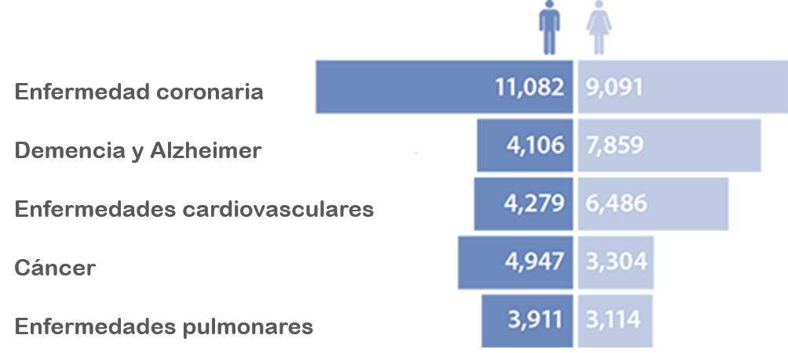
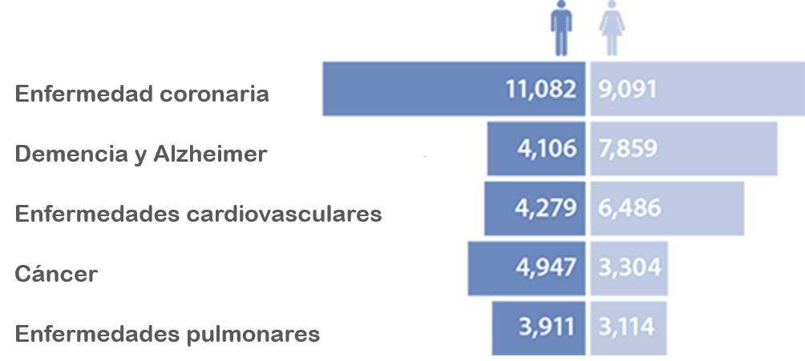

LA PERCEPCIÓN DEL RIESGO
Estudio sobre las principales causas de muerte


Si vives en España tienes una posibilidad entre 150 de morir en un accidente doméstico a lo largo de tu vida, y sólo una posibilidad entre 120.000 de fallecer
en un atentado terrorista. Sin embargo, es muy posible que tengas más miedo a morir por las bombas de Al Qaeda que abrasado por una sartén de
aceite hirviendo.
Así somos, generalmente asustados de los peligros más improbables, y casi siempre desprevenidos de los riesgos potencialmente más amenazantes.
No ayuda tampoco la repercusión mediática que tienen ciertos sucesos. Los muertos por atentado terrorista, por accidente de aviación o devorados por un tiburón tienen un eco desmesurado,
mientras que de las víctimas de caídas, infartos o asfixia sólo se enteran sus familiares
y los médicos que los atienden.
Para una correcta evaluación del riesgo, a continuación mostraremos las conclusiones extraidas del análisis de datos relativos a las principales causas de muerte en el mundo.
El estudio está dividido en las siguientes secciones:

Tal y como muestra la gráfica de arriba, solemos estar asustados por los motivos equivocados. Por ejemplo, hay mucha gente que tiene un miedo atroz a volar en avión, pero luego olvida ponerse el cinturón de seguridad cuando sale a dar una vuelta en su coche.
Sufrir un accidente con el coche es varios órdenes de magnitud más probable que sufrir un accidente de avión. Concretamente, en España murieron 1.873 personas en accidentes de tráfico
y 15 en accidente de aviación (en total, 18 en lo que va de década). La percepción del riesgo, sin embargo, es diametralmente opuesta.
Si tienes que tener miedo a algo, tenlo a tu propia casa, especialmente si está dotada de artefactos "diabólicos", como escaleras o piscinas.
Las escaleras provocan más de 300.000 accidentes al año en Inglaterra y matan un número elevadísimo de ancianos.
Por su parte, y aunque resulte contraintuitivo, la estadística confirma que es más peligroso tener una piscina en casa que un arma de fuego.
Otro riesgo que subestimamos sistemáticamente son las muertes por las altas temperaturas, que se llevan por delante a 1.000 personas cada año en España, cinco veces más que las víctimas del 11-M en Madrid.
¿Cuáles son las principales causas de muerte?
¿Cómo morimos? ¿Es más probable que tengas un accidente de coche, que te muerda un perro o que te caigas por las escaleras?
Las cifras muestran que mueren más personas de cáncer que de enfermedades circulatorias.
Podemos preocuparnos por los asesinatos o la gripe porcina, pero los grandes asesinos de las enfermedades del corazón y el cáncer son mucho más significativos en términos de salud pública.
Lo que también es sorprendente es la cantidad constante de muchas de estas cifras de muertes: ¿por qué, por ejemplo, alrededor de 17.000 personas mueren cada año en accidentes?
¿Por qué alrededor de 200 personas accidentalmente se ahogan cada año?
 

Según Género (Masculino / Femenino)
El riesgo de cada una de las causas de muerte bajo estudio es diferente según el sexo de la persona.
La gráfica de la izquierda muestra una comparativa de las principales causas de muerte según el género.
Mientras que la mortalidad debida al cáncer fue, por lo general, más elevada en los hombres que en las mujeres, hay un número de cánceres
que predomina entre uno solo de los sexos, como es el cáncer de mama en las mujeres, mientras que otros cánceres son exclusivos de uno de los sexos, como el cáncer de útero en las mujeres o el cáncer de próstata en los hombres.
Según Localización Geográfica
Las causas de muerte también varían según la zona geográfica.
En muchos países subdesarrollados, la causa principal de muerte de los ciudadanos es la malaria, la diarrea, el parto prematuro, el VIH / SIDA o la violencia,
que además afecta a personas a una edad más temprana. Mientras que en los países desarrollados las enfermedades del corazón,
los accidentes de tráfico, o los accidentes cerebrovasculares son las principales causas de muerte.

Según Edad
En este estudio también se observa que las causas de muerte varían con la edad.
En el caso de las personas menores de 50 años, las principales causas de muerte son muy diversas, predominando los accidentes de tráfico y los suicidios.
Mientras que el cáncer y las enfremedades cardiovasculares son las causas más importantes de muerte en los mayores de 50 años

“La seguridad es principalmente una superstición. No existe en la naturaleza, ni los hijos de los hombres en su conjunto la experimentan.
Evitar el peligro no es más seguro a largo plazo que la exposición directa. La vida es una aventura atrevida o nada.”
Helen Keller